خانهٔ عمومی home.html مهمان (بدون ورود)
دسکتاپ ۱۴۴۰ — نمای اولیه (راست: قبل، چپ: بعد)
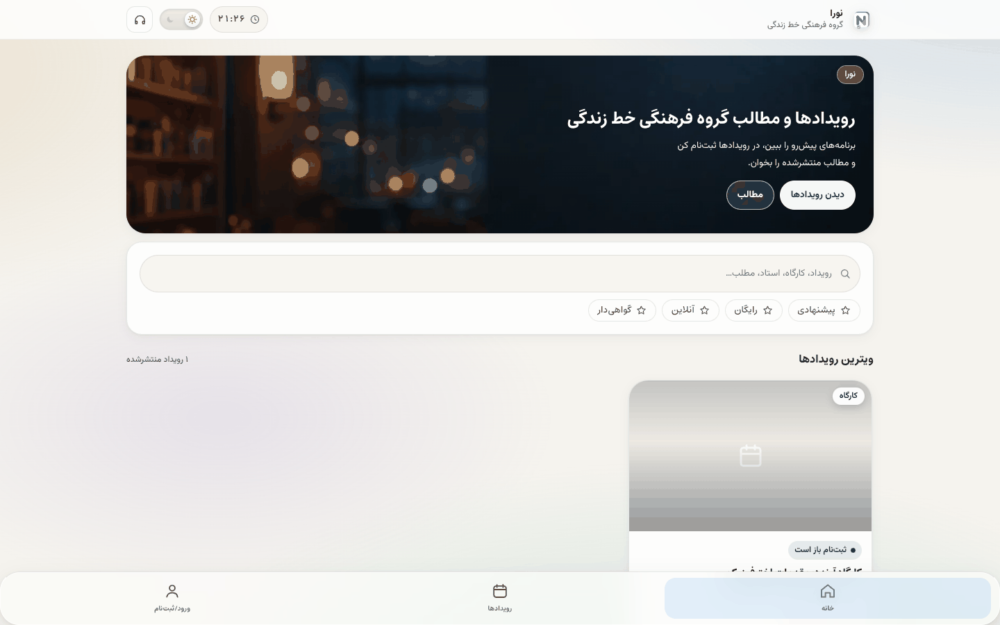
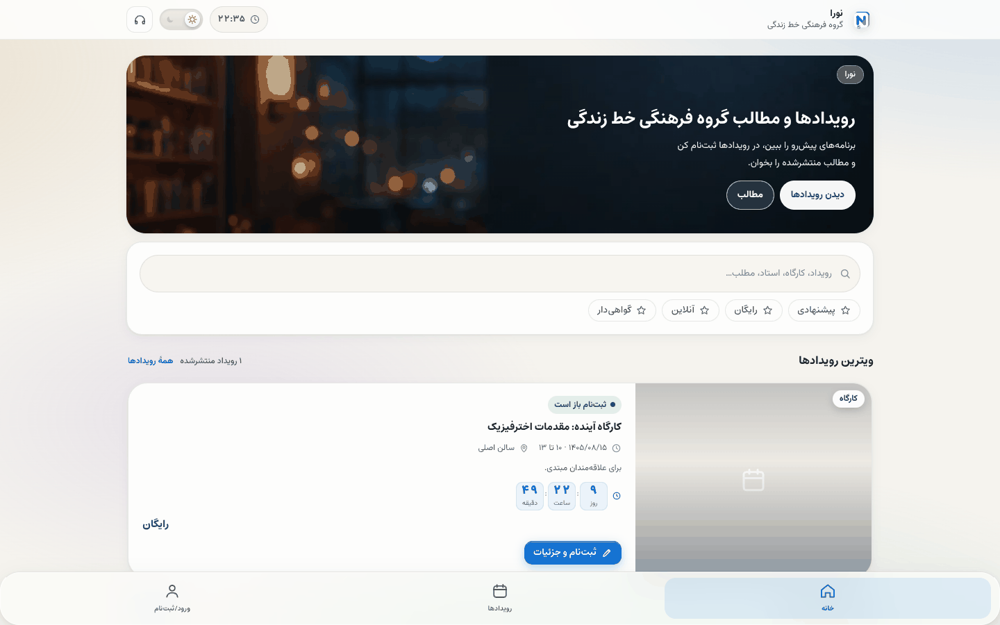
نمای کامل ۱۴۴۰ (قبل/بعد)
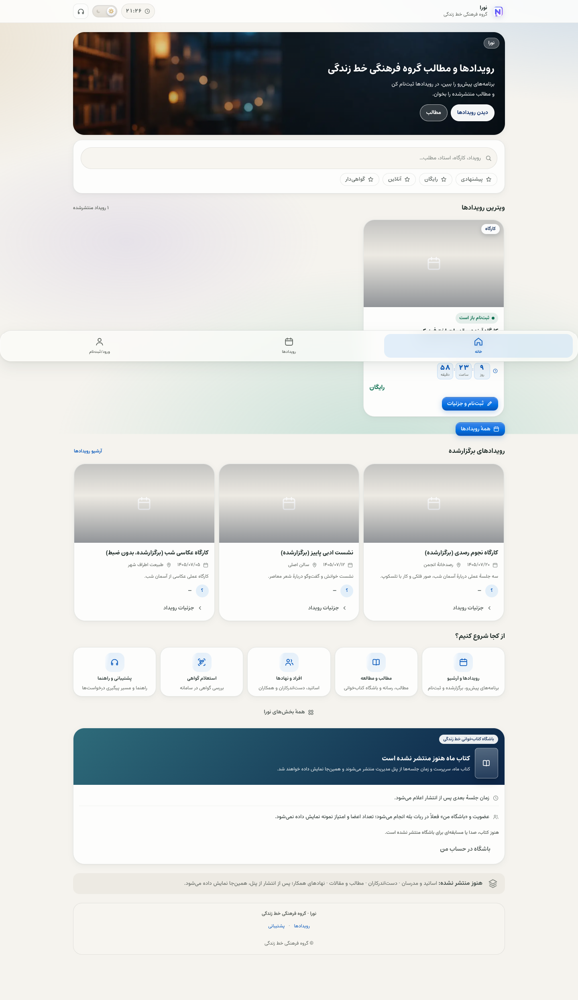
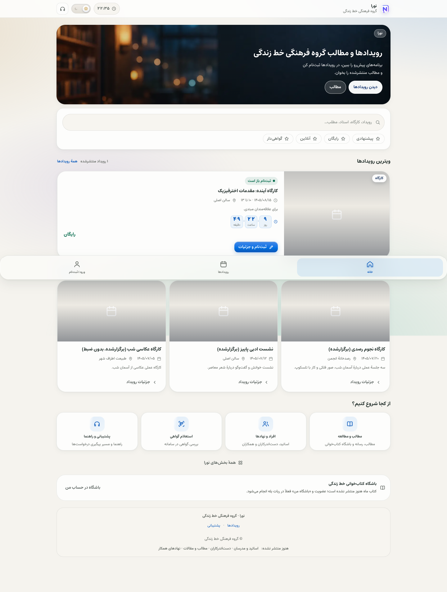
موبایل ۳۹۰ — نمای اولیه
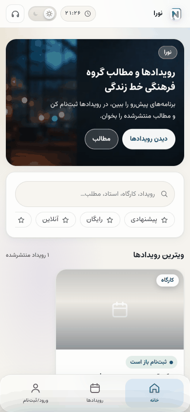
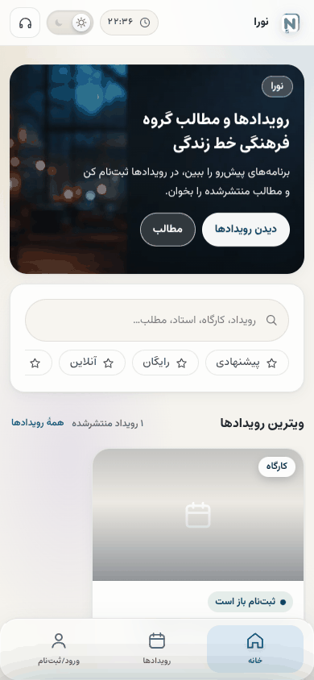
نمای کامل ۳۹۰ (قبل/بعد)
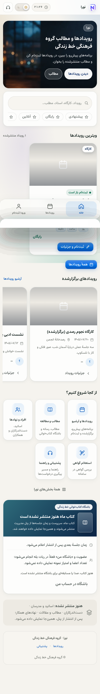
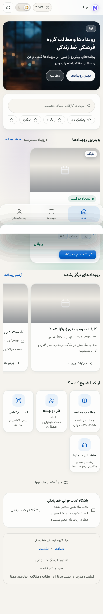
ارزیابی با نگاه کاربر (از شات «بعد»)
| اولین چیزی که توجه را میگیرد | بنر تیره با عنوان و دکمهٔ روشن «دیدن رویدادها»؛ نگاه درست به مقصد اصلی میرود. |
|---|---|
| روشنی اقدام اصلی | روشن (دکمهٔ پر، تنها رنگ روشن روی بنر). «مطالب» بهدرستی ثانویه است. |
| عناصر رقیب | کارت جستوجو با ۴ چیپ ستارهدار درست زیر بنر (پیش از هر محتوایی)؛ سه کنترل هموزن سربرگ (پشتیبانی، شب/روز، ساعت)؛ شمارش معکوس با ارقام آبی که رنگ تأکیدی CTA را تکرار میکند. |
| کارتها و کادرها | بنر، کارت جستوجو، کارت رویداد: سه کادر پشت هم. کارت جستوجو گروهبندی معنایی اضافه نمیکند؛ فقط یک سطح است. |
| پیدا کردن مسیر بعدی | بله؛ ویترین + «همهٔ رویدادها» + tabbar. نسبت به قبل (ویترین یکسوم عرض و فضای خالی) روشنتر شده است. |
| همخانوادگی با نورا | بله؛ همان زبان عمومی نورا (سطوح روشن، هیرلاین، چیپ). |
- کاربردپذیریدر ۳۹۰ چیپ چهارم «گواهیدار» فقط به یک ستاره بدون برچسب تقلیل مییابد؛ صافی ناخوانا میشود.شاهد
- کاربردپذیریکارت جستوجو + چیپها پیش از محتوا: اولین رویداد در ۱۴۴۰ از ≈۵۵۰px و در ۳۹۰ زیر تا شروع میشود؛ کاربر تازهوارد ابتدا ابزار میبیند، نه محتوا.
- سلیقهایپیل ساعت در سربرگ و ارقام آبی شمارش معکوس، دو تأکید بیهدف کنار CTA.
داشبورد مالک admin.html#dash مالک
دسکتاپ ۱۴۴۰ — نمای اولیه (راست: قبل، چپ: بعد)
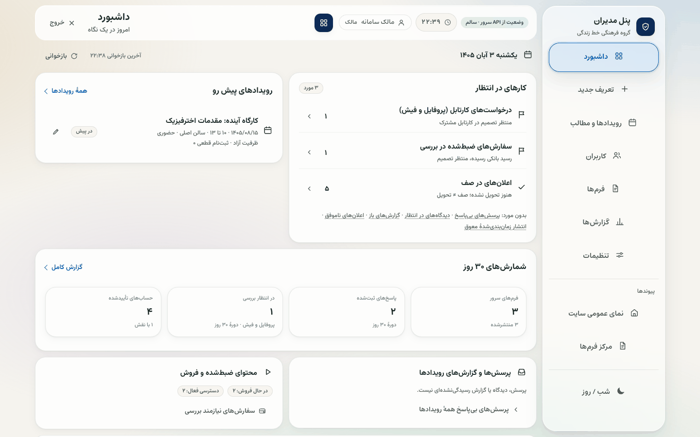
نمای کامل ۱۴۴۰ (قبل/بعد)
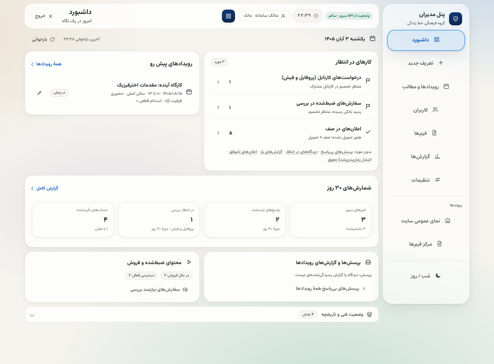
موبایل ۳۹۰ — نمای اولیه
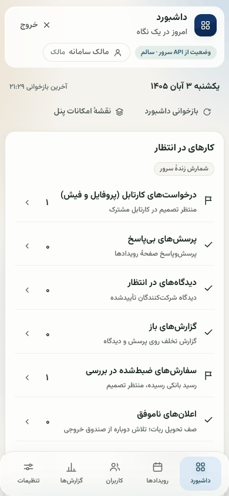
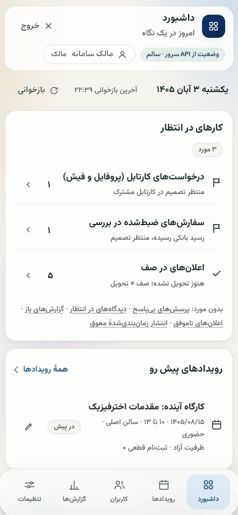
نمای کامل ۳۹۰ (قبل/بعد)
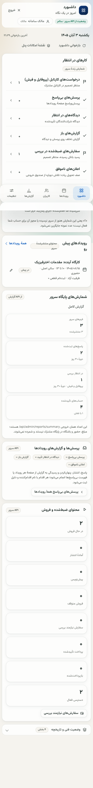
ارزیابی با نگاه کاربر (از شات «بعد»)
| اولین چیزی که توجه را میگیرد | عنوان «کارهای در انتظار» و چیپ «۳ مورد»؛ هدف درستی است. |
|---|---|
| روشنی اقدام اصلی | اقدام اصلی یکتا وجود ندارد (داشبورد = ورودی)؛ سه ردیف کار با شورون، قابلفهم. |
| عناصر رقیب | سربرگ با چهار عنصر پیش از هر محتوایی (چیپ «وضعیت از API سرور · سالم»، ساعت، هویت، مربع آیکون)؛ خوشهٔ پنج پیوند ریز «بدون مورد: …»؛ KPIهای کارتدرکارت. |
| کارتها و کادرها | کارت کارها خوب گروهبندی میکند؛ «شمارشهای ۳۰ روز» کارتی است که چهار کارت کوچک در خود دارد (دو سطح بصری بدون معنای اضافه). |
| پیدا کردن مسیر بعدی | بله برای کارها؛ «گزارش کامل» و «همهٔ رویدادها» پیوندهای روشن. |
| همخانوادگی با نورا | بله؛ همخانواده با بقیهٔ پنل. نسبت به قبل (۸ ردیف، ۶ صفر، جملهٔ توضیحی) بسیار آرامتر. |
- کاربردپذیریدر ۱۴۴۰ ستون چپ (رویدادهای پیشرو) کوتاه است و بلوک خالی بزرگی کنار کارت کارها میماند؛ نمای اول نیمهخالی به نظر میرسد.شاهد
- سلیقهایKPI کارتدرکارت؛ همان اعداد با ردیفهای هیرلایندار در خود کارت کافی است.
- کاربردپذیریواژگان فنی در سربرگ («API سرور»)؛ برای مالک غیرفنی معنایی جز «سبز است» ندارد و جای ثابتی از سربرگ را میگیرد.
داشبورد مدیر محدود admin.html#dash مدیر محدود (بدون ev_publish و مجوز مالی)
دسکتاپ ۱۴۴۰ — نمای اولیه (راست: قبل، چپ: بعد)
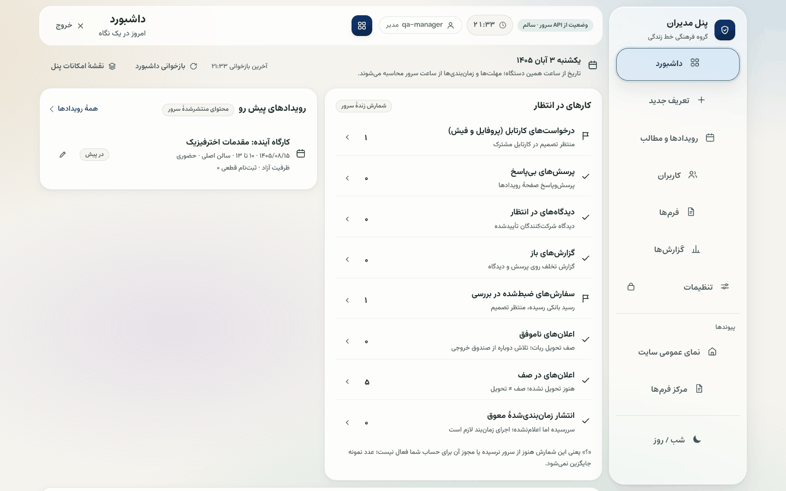
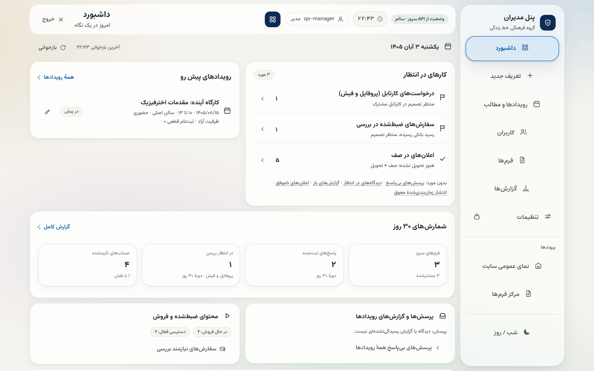
نمای کامل ۱۴۴۰ (قبل/بعد)
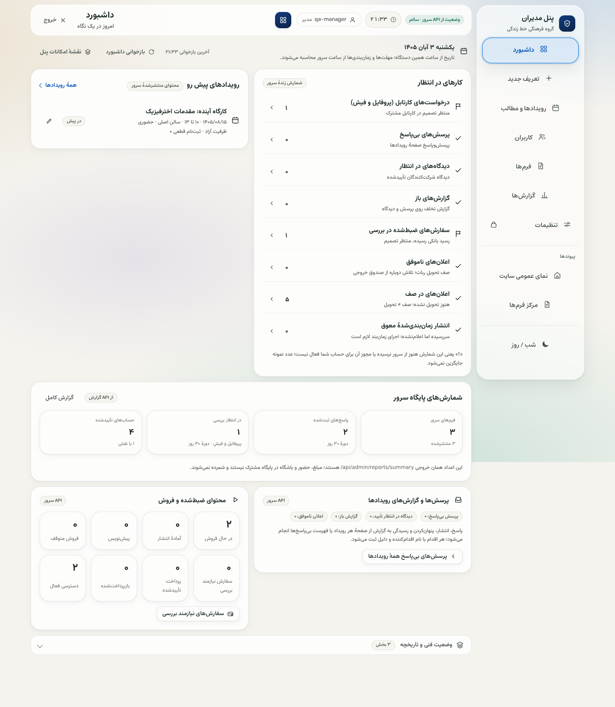
موبایل ۳۹۰ — نمای اولیه
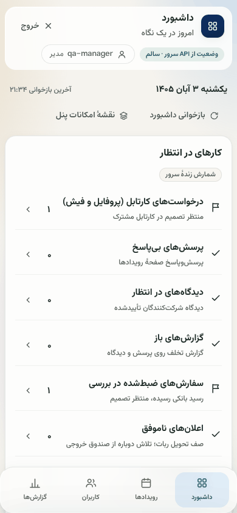
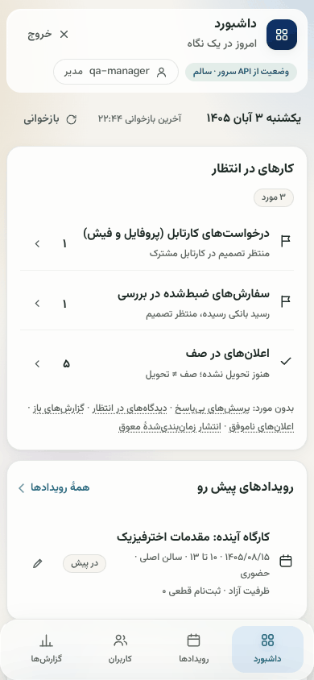
نمای کامل ۳۹۰ (قبل/بعد)
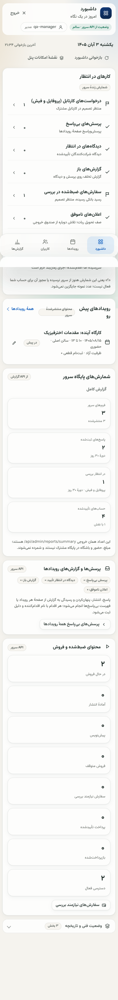
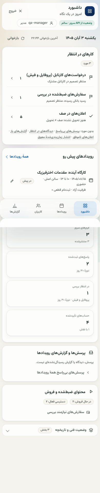
ارزیابی با نگاه کاربر (از شات «بعد»)
| اولین چیزی که توجه را میگیرد | همان داشبورد مالک؛ تنها تفاوت قفل کنار «تنظیمات» و هویت «qa-manager مدیر». |
|---|---|
| روشنی اقدام اصلی | مثل مالک. |
| عناصر رقیب | مثل مالک؛ بهعلاوه مورد «تنظیمات» که دیده میشود اما مقصدش برای این نقش بسته است. |
| کارتها و کادرها | مثل مالک. |
| پیدا کردن مسیر بعدی | بله؛ یکسانبودن ساختار برای دو نقش مثبت است (یادگیری یکباره). |
| همخانوادگی با نورا | بله. |
- کاربردپذیری«تنظیمات» با قفل در ناوبری میماند: شفاف است اما یک مقصد قابلکلیک است که به «مجوز ندارید» میرسد؛ تصمیم محصولی (نمایش با قفل) باید آگاهانه تأیید شود.شاهد
- سلیقهاینام کاربری لاتین داخل پیل هویت، در سربرگ فارسی ناهمخوان است (نام نمایشی فارسی اگر در پروفایل باشد بهتر است).
فهرست مدیریت رویدادها admin.html#events مالک
دسکتاپ ۱۴۴۰ — نمای اولیه (راست: قبل، چپ: بعد)
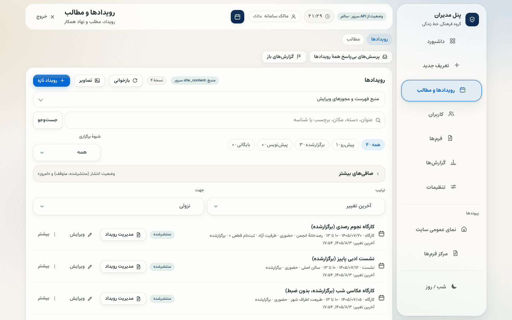
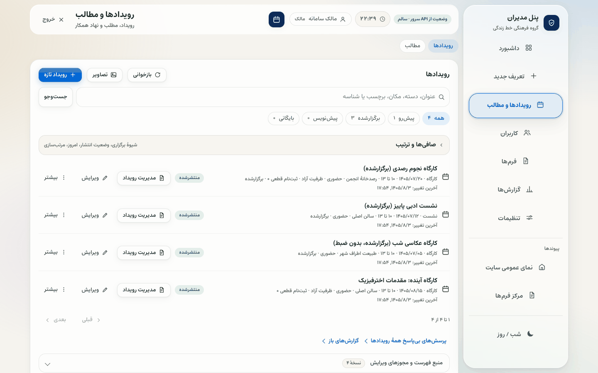
نمای کامل ۱۴۴۰ (قبل/بعد)
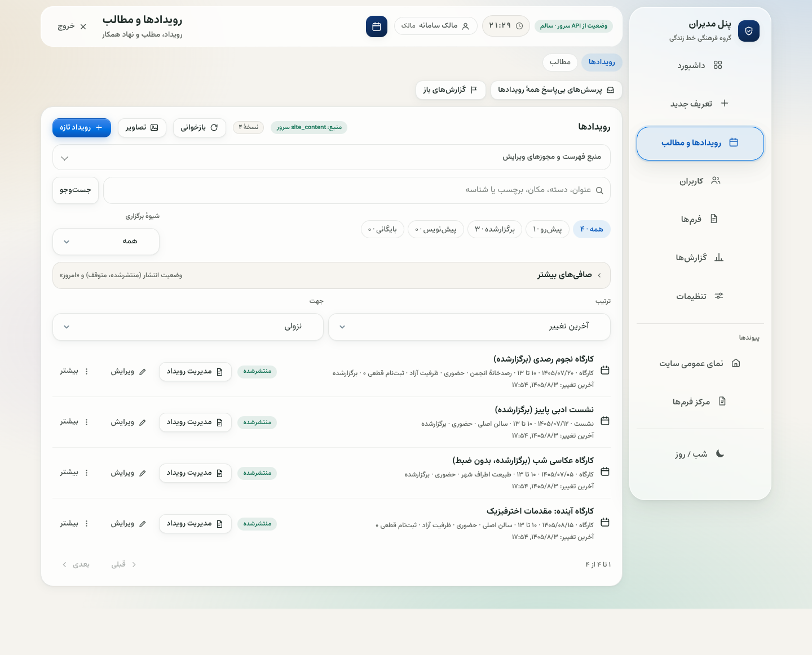
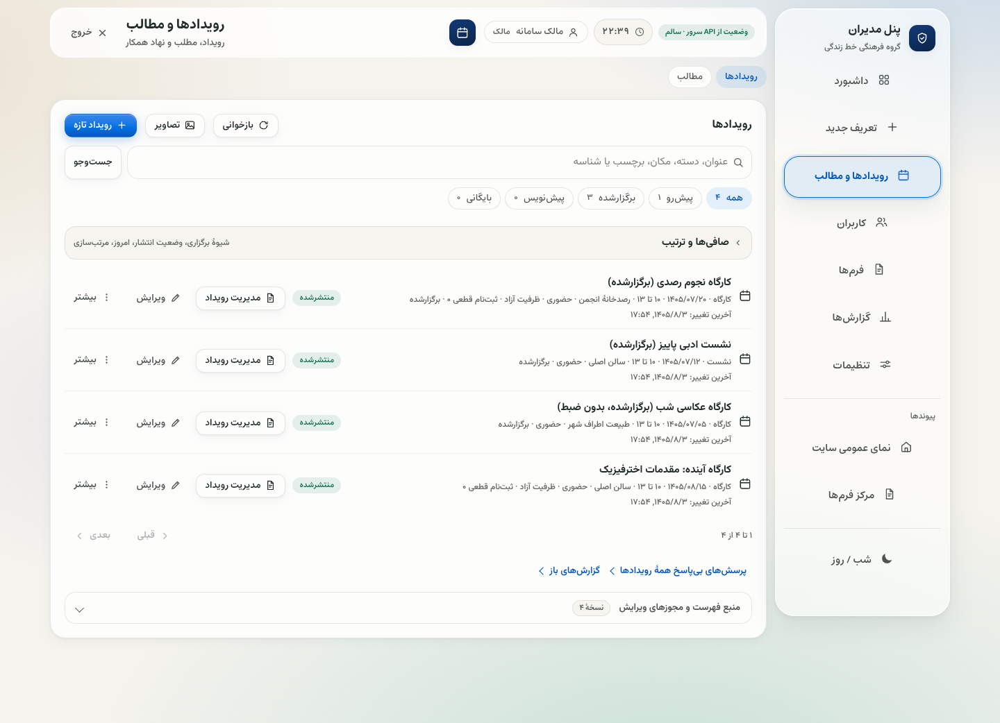
موبایل ۳۹۰ — نمای اولیه
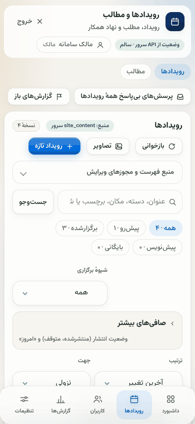
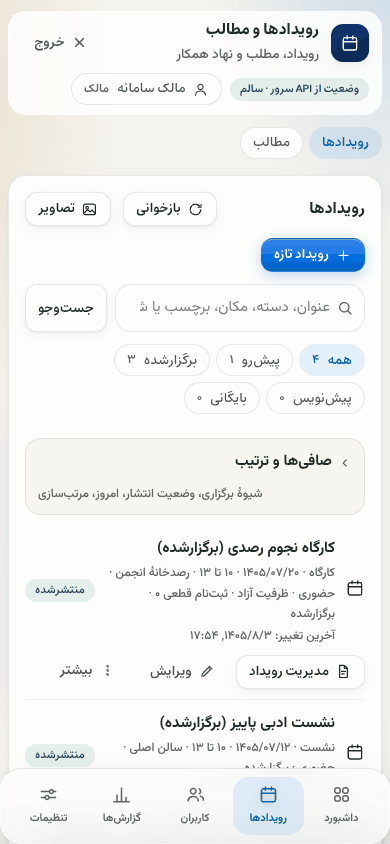
نمای کامل ۳۹۰ (قبل/بعد)
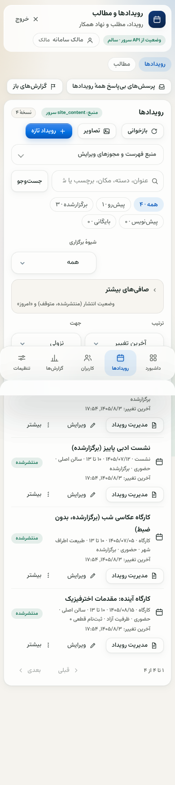
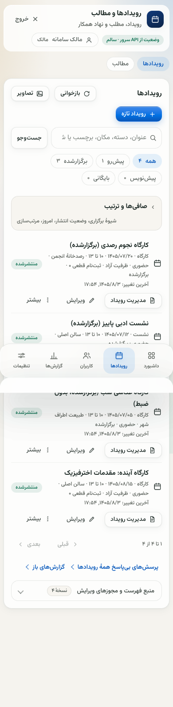
ارزیابی با نگاه کاربر (از شات «بعد»)
| اولین چیزی که توجه را میگیرد | دکمهٔ پر «رویداد تازه» در انتهای سطر و سپس جعبهٔ جستوجو؛ سگمنت «رویدادها | مطالب» بالای کارت. |
|---|---|
| روشنی اقدام اصلی | روشن («رویداد تازه»). «تصاویر» و «بازخوانی» هماندازه کنار آن ثانویهاند اما هموزن دیده میشوند. |
| عناصر رقیب | ۵ چیپ وضعیت + سطر «صافیها و ترتیب»؛ در هر ردیف دو خط متای خاکستری (از جمله «آخرین تغییر» برای همهٔ ردیفها). |
| کارتها و کادرها | یک کارت برای همهچیز: خوب. ردیفها با هیرلاین جدا شدهاند. |
| پیدا کردن مسیر بعدی | بله؛ «مدیریت رویداد» در هر ردیف روشن، «ویرایش» کنار آن، بقیه در «بیشتر» (با صفحهکلید آزموده شد). |
| همخانوادگی با نورا | بله. نسبت به قبل (۸ بلوک کنترلی پیش از اولین ردیف) اولین ردیف بسیار بالاتر آمده است. |
- کاربردپذیریدر ۳۹۰ سطر سرکارت به سه خط میشکند (بازخوانی/تصاویر، عنوان، «رویداد تازه» تنها در یک خط) و دکمهٔ جداگانهٔ «جستوجو» کنار ورودی تکراری است؛ اولین ردیف از ≈۵۴۰px شروع میشود.شاهد
- کاربردپذیریسگمنت «رویدادها | مطالب» بیرون کارت با ظاهر چیپ: مثل زبانهٔ صفحه عمل میکند اما شبیه صافی است.
- سلیقهایخط دوم متای هر ردیف («آخرین تغییر: …») ارزش تصمیمی کم و هزینهٔ ارتفاع دارد.
پروندهٔ رویداد admin.html#event=<id> مالک
دسکتاپ ۱۴۴۰ — نمای اولیه (راست: قبل، چپ: بعد)
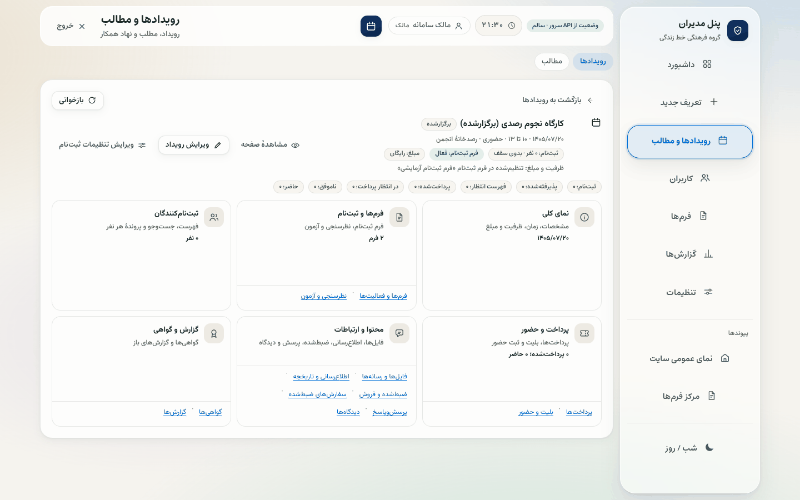
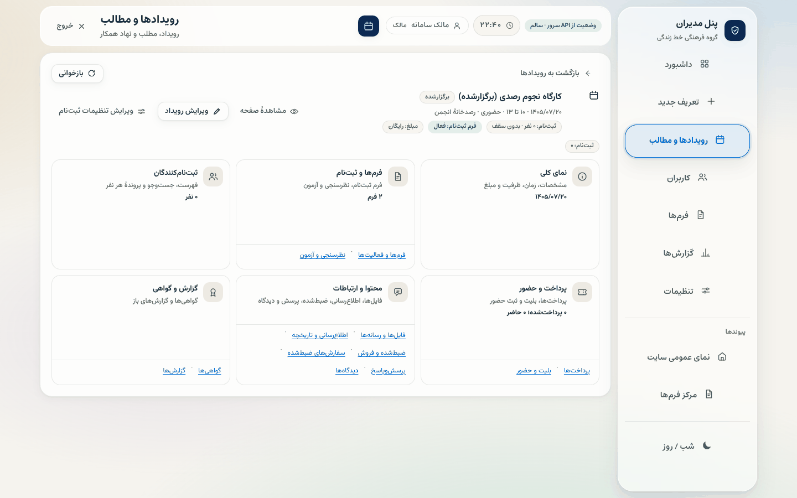
نمای کامل ۱۴۴۰ (قبل/بعد)
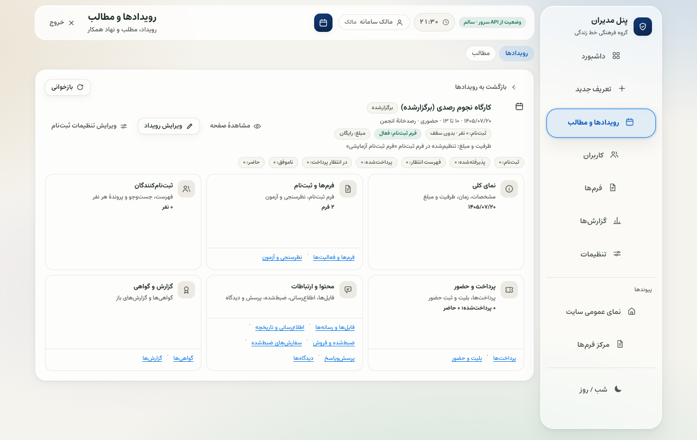
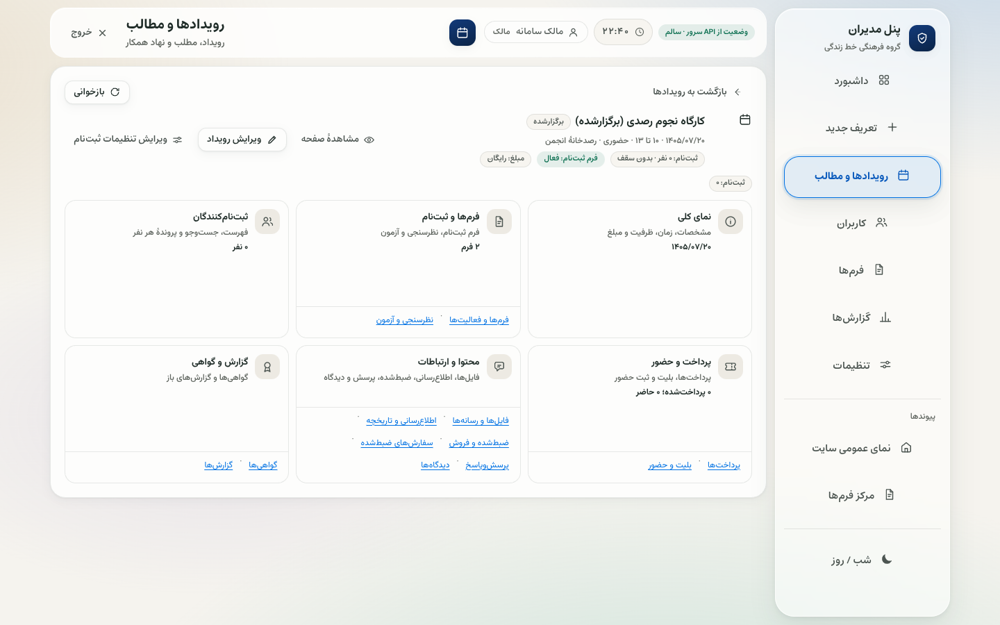
موبایل ۳۹۰ — نمای اولیه
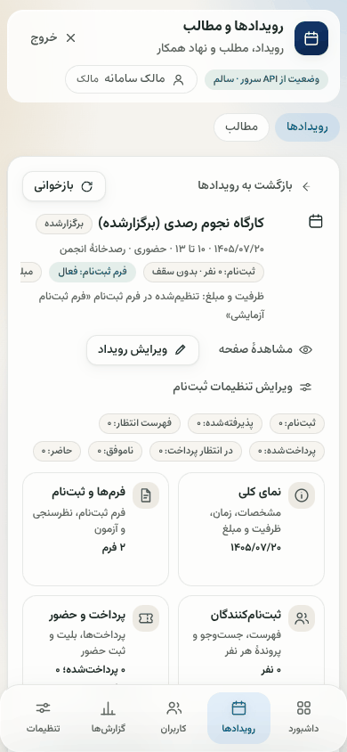
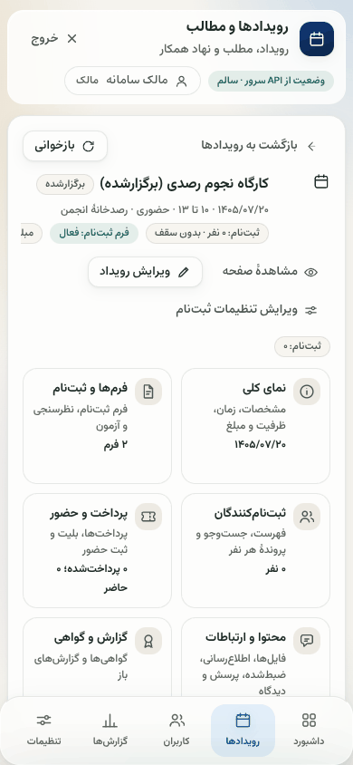
نمای کامل ۳۹۰ (قبل/بعد)
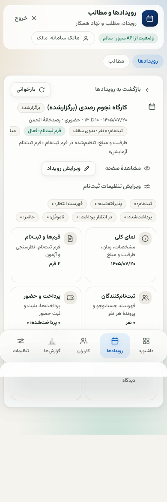
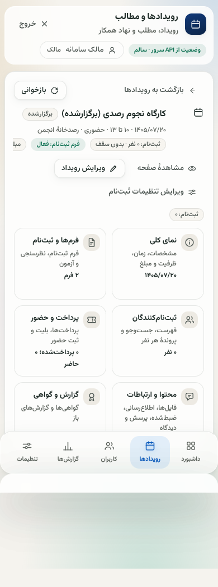
ارزیابی با نگاه کاربر (از شات «بعد»)
| اولین چیزی که توجه را میگیرد | عنوان رویداد با برچسب وضعیت، سپس شش کاشی هموزن. |
|---|---|
| روشنی اقدام اصلی | «ویرایش رویداد» (کادردار) و «مشاهدهٔ صفحه»؛ برای رویداد برگزارشده اقدام اصلی طبیعتاً کمرنگ است؛ کاشیها ناوبریاند. |
| عناصر رقیب | سطر دوم چیپ («ثبتنام: ۰») همان اطلاع چیپ سطر اول («ثبتنام: ۰ نفر · بدون سقف») را تکرار میکند؛ درون کاشیها فهرست پیوندهای زیرخطدار (الگوی دوم تعامل داخل یک کاشی). |
| کارتها و کادرها | شش کاشی با ارتفاع برابر و بدنهٔ خالی؛ کادر بیش از محتواست. گروهبندی ۶گانه درست است، ظرف آن سنگین. |
| پیدا کردن مسیر بعدی | بله؛ نام کاشیها گویاست. اما اینکه «روی کاشی کلیک کنم یا روی پیوند زیر آن» مبهم است. |
| همخانوادگی با نورا | بله. نسبت به قبل (۹ چیپ، ۶ صفر، سگمنت داخل پرونده) خلوتتر. |
- کاربردپذیریچیپ تکراری «ثبتنام: ۰» در سطر جداگانه (یک اطلاع، دو بار، دو جا).شاهد
- کاربردپذیریدر ۳۹۰ سطر چیپها از لبه بریده میشود («مبل…») و «ویرایش تنظیمات ثبتنام» به شکل متن لخت زیر دکمه میافتد؛ سلسلهمراتب اقدامها گم میشود.شاهد
- سلیقهایکاشیهای بلند با بدنهٔ خالی و پیوندهای زیرخطدار؛ فهرست ردیفی با شمارش و یک شورون همان کار را با نصف ارتفاع میکند.
مرکز فرمها admin.html#forms مالک
دسکتاپ ۱۴۴۰ — نمای اولیه (راست: قبل، چپ: بعد)
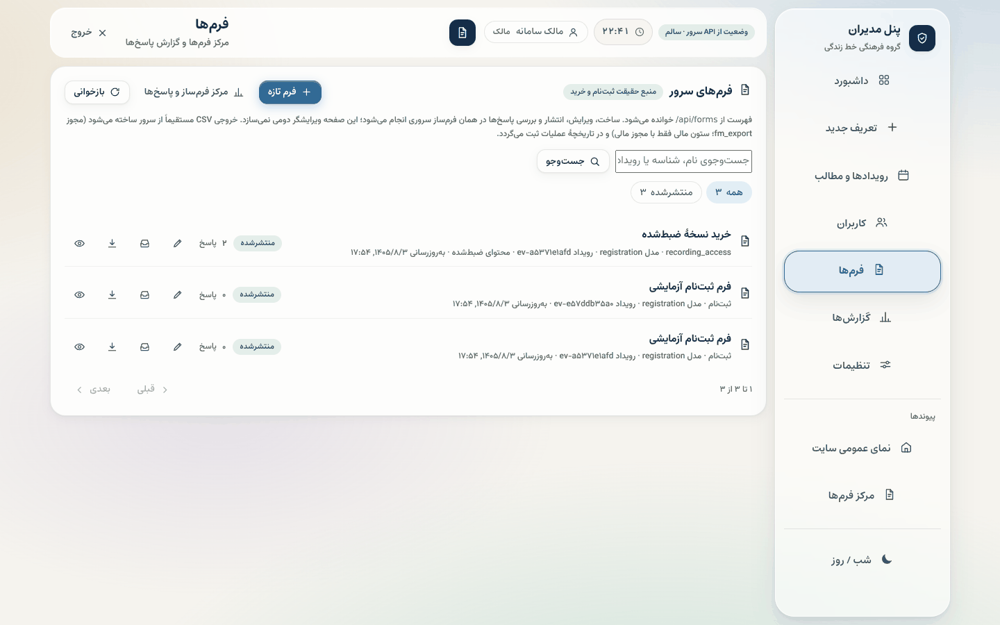
نمای کامل ۱۴۴۰ (قبل/بعد)
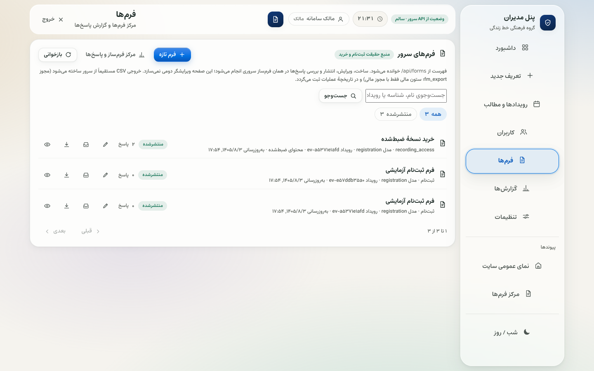
موبایل ۳۹۰ — نمای اولیه
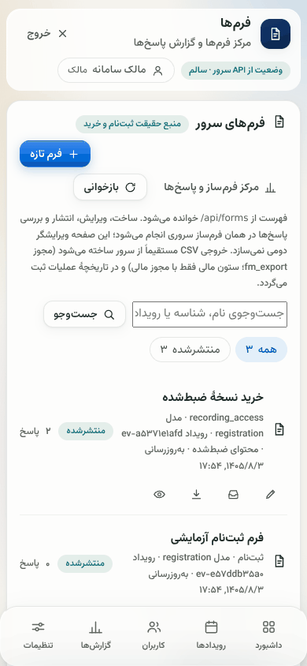
نمای کامل ۳۹۰ (قبل/بعد)
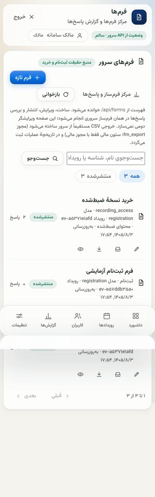
ارزیابی با نگاه کاربر (از شات «بعد»)
| اولین چیزی که توجه را میگیرد | دکمهٔ پر «فرم تازه» و برچسب «منبع حقیقت ثبتنام و خرید»؛ سپس پاراگراف فنی. |
|---|---|
| روشنی اقدام اصلی | روشن («فرم تازه»)؛ اما «مرکز فرمساز و پاسخها» کنار آن و «مرکز فرمها» در نوار کناری، یک مقصد را دو بار نشان میدهند. |
| عناصر رقیب | پاراگراف فنی (`/api/forms/`، `fm_export`، CSV): دو خط در ۱۴۴۰ و پنج خط در ۳۹۰ (≈یکپنجم نما)؛ متای هر ردیف با شناسهٔ خام (`مدل registration · رویداد ev-a5371e1afd · recording_access`). |
| کارتها و کادرها | یک کارت؛ خوب. |
| پیدا کردن مسیر بعدی | چهار اقدام آیکونی بدون برچسب در هر ردیف (چشم، دانلود، صندوق، مداد): روی دسکتاپ با hover و روی موبایل با حدس. |
| همخانوادگی با نورا | بله؛ ولی تنها صفحهٔ پنل است که هنوز با متن فنی شروع میشود (در دو مرحلهٔ قبل دست نخورده بود؛ سنجهها قبل/بعد یکسان). |
- کاربردپذیریاقدامهای آیکونی بیبرچسب؛ روی موبایل hover وجود ندارد.شاهد
- کاربردپذیریپاراگراف فنی + شناسههای خام در ردیفها؛ اولین فرم در ۳۹۰ تازه در انتهای نما دیده میشود.
- کاربردپذیریمقصد تکراری فرمساز (پیوند سرکارت + نوار کناری).
ثبتنامکنندگان admin.html#event=<id>&tab=regs مالک (رویداد فیکسچر بدون ثبتنام → حالت خالی)
دسکتاپ ۱۴۴۰ — نمای اولیه (راست: قبل، چپ: بعد)
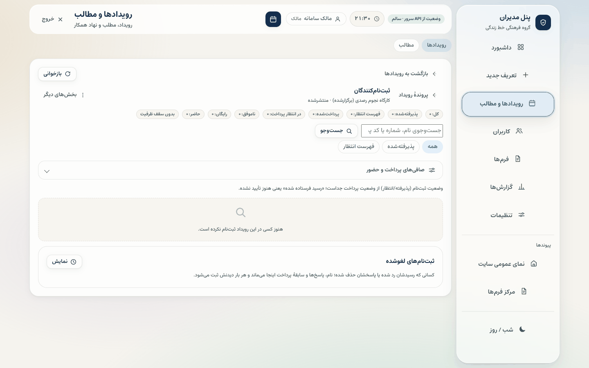
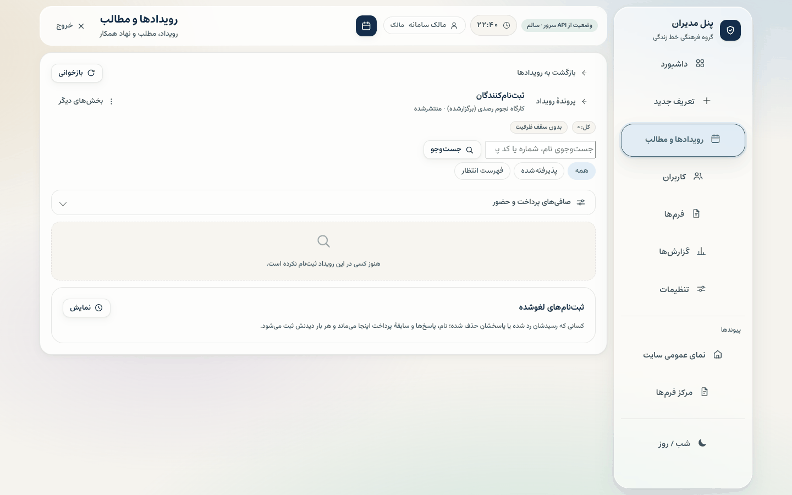
نمای کامل ۱۴۴۰ (قبل/بعد)
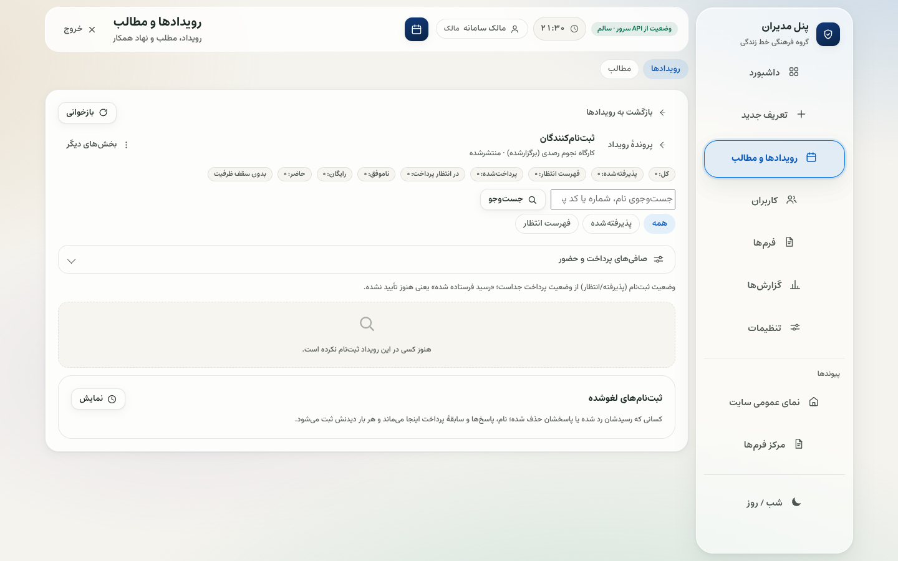
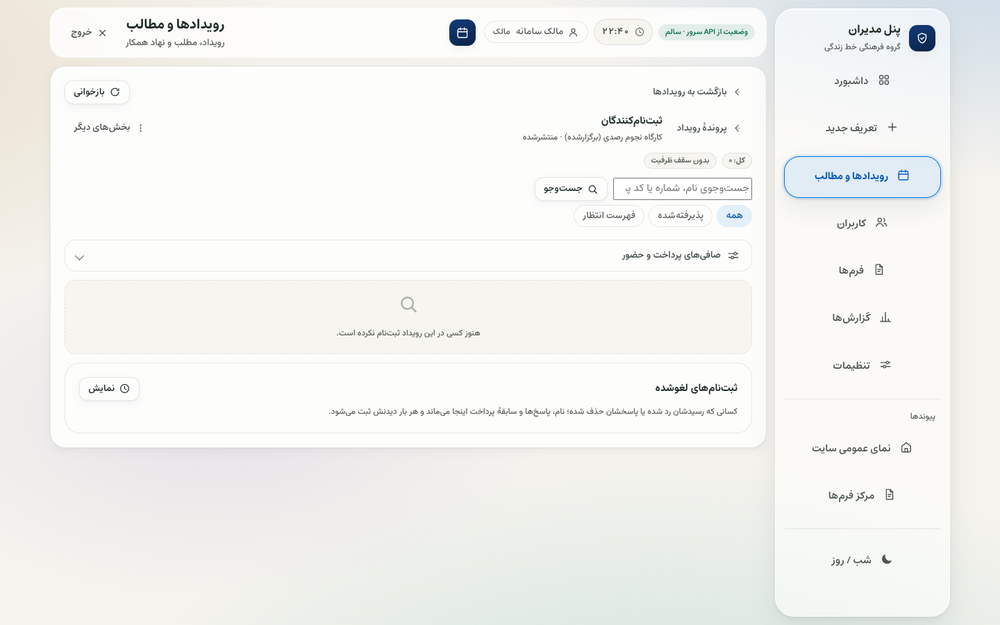
موبایل ۳۹۰ — نمای اولیه
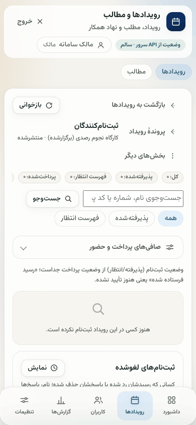
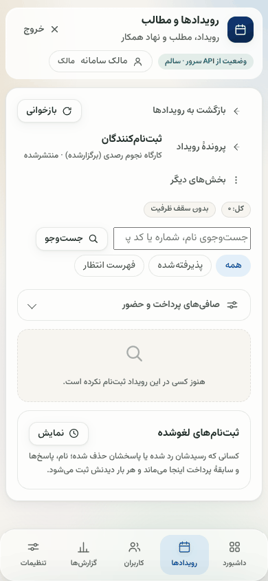
نمای کامل ۳۹۰ (قبل/بعد)
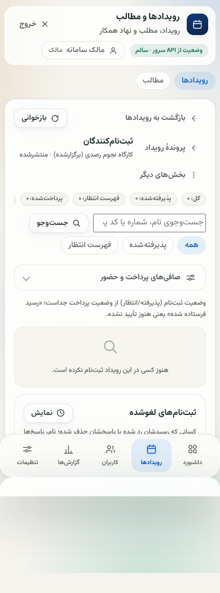
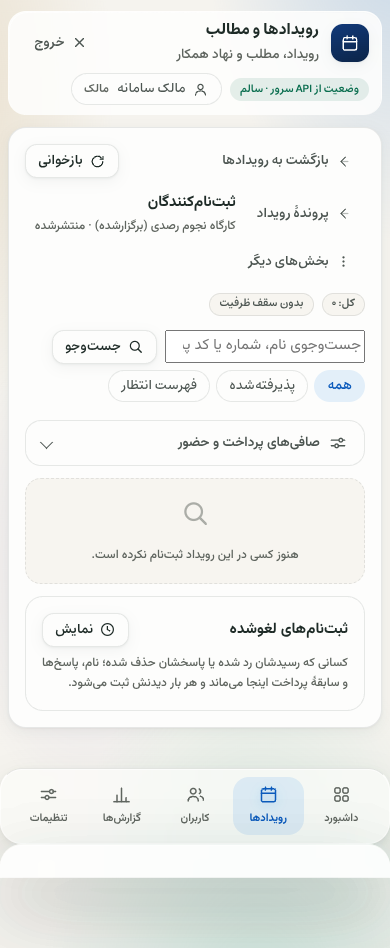
ارزیابی با نگاه کاربر (از شات «بعد»)
| اولین چیزی که توجه را میگیرد | دو پیوند بازگشت پشت هم («بازگشت به رویدادها»، «پروندهٔ رویداد») و سپس حالت خالی. |
|---|---|
| روشنی اقدام اصلی | وجود ندارد؛ حالت خالی («هنوز کسی ثبتنام نکرده») بنبست است: نه «ثبتنام دستی»، نه «پیوند ثبتنام را به اشتراک بگذار». |
| عناصر رقیب | جستوجو + ۳ چیپ وضعیت + «صافیهای پرداخت و حضور» برای فهرستی که خالی است؛ منوی «بخشهای دیگر». |
| کارتها و کادرها | دو کارت (فهرست، لغوشدهها): منطقی. سربرگ صفحه هنوز «رویدادها و مطالب» است و نام رویداد فقط در متن ریز زیر عنوان. |
| پیدا کردن مسیر بعدی | بازگشت بله؛ ادامهٔ کار خیر (بدون اقدام). |
| همخانوادگی با نورا | بله. نسبت به قبل (۱۰ چیپ صفر + جملهٔ توضیحی) خلوت. |
- کاربردپذیریحالت خالی بدون اقدام.شاهد
- کاربردپذیریدو پیوند بازگشت با دو مقصد نزدیک، پشت هم.
- سلیقهاینمایش ابزار صافی وقتی فهرست خالی است.
تنظیمات admin.html#settings مالک
دسکتاپ ۱۴۴۰ — نمای اولیه (راست: قبل، چپ: بعد)
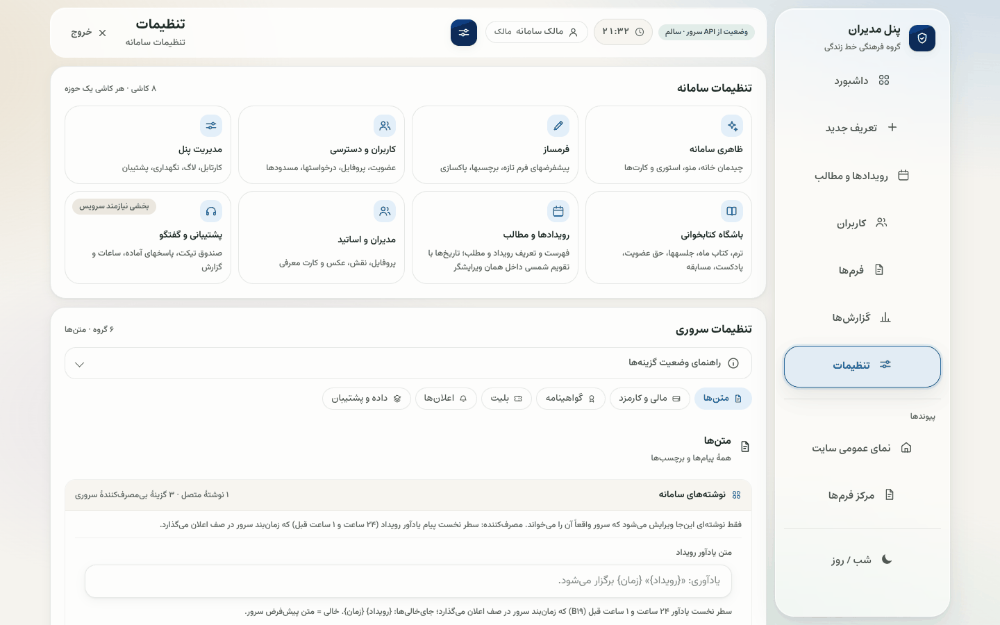
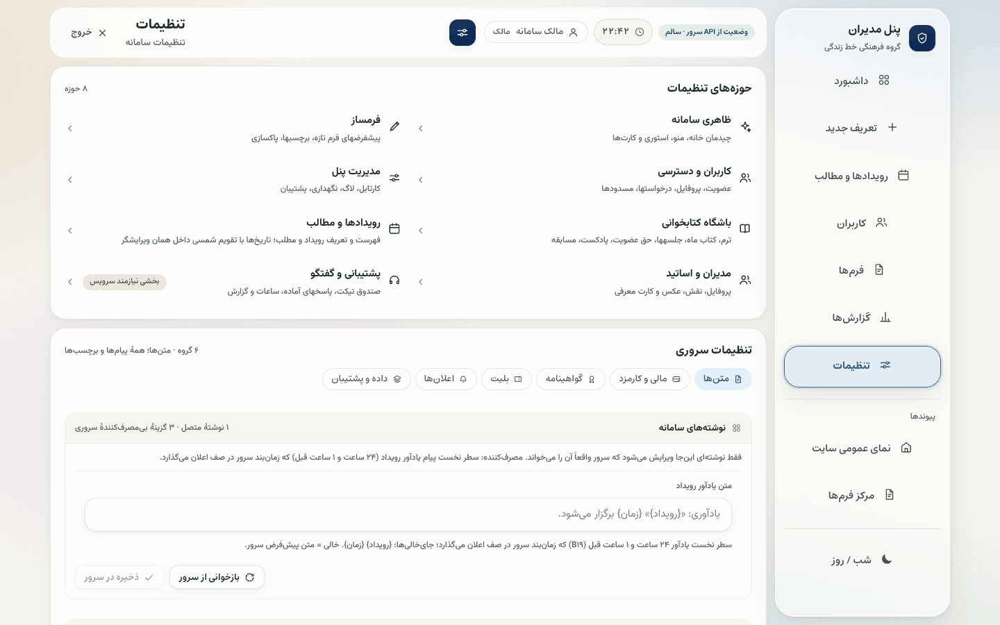
نمای کامل ۱۴۴۰ (قبل/بعد)
موبایل ۳۹۰ — نمای اولیه
نمای کامل ۳۹۰ (قبل/بعد)
ارزیابی با نگاه کاربر (از شات «بعد»)
| اولین چیزی که توجه را میگیرد | فهرست «حوزههای تنظیمات» (۸ ردیف)؛ در ۳۹۰ کل نمای اول همین فهرست است. |
|---|---|
| روشنی اقدام اصلی | وجود ندارد؛ «ذخیره در سرور» (درست) غیرفعال و خاکستری در انتهای زیرکارت، کمپیدا. |
| عناصر رقیب | دو لایهٔ ناوبری با دو مدل (فهرست حوزهها + چیپهای گروه)؛ چهار حوزه از هشتتا از صفحه بیرون میروند (فرمساز، کاربران، باشگاه، رویدادها). |
| کارتها و کادرها | سه سطح تو در تو: کارت صفحه → چیپها → زیرکارت با نوار عنوان («نوشتههای سامانه») → فیلد → زیرکارت دوم («بدون مصرفکنندهٔ سروری») با سه ردیفِ «در دسترس نیست». |
| پیدا کردن مسیر بعدی | نیمهروشن؛ کاربر باید یاد بگیرد کدام لایه چه میکند. |
| همخانوادگی با نورا | بله. نسبت به قبل (۸ کاشی بزرگ) سبکتر؛ ساختار همان است. |
حساب عضو account.html عضو (ورود با حساب آزمایشی)
دسکتاپ ۱۴۴۰ — نمای اولیه (راست: قبل، چپ: بعد)
نمای کامل ۱۴۴۰ (قبل/بعد)
موبایل ۳۹۰ — نمای اولیه
نمای کامل ۳۹۰ (قبل/بعد)
ارزیابی با نگاه کاربر (از شات «بعد»)
| اولین چیزی که توجه را میگیرد | نوار آبی گرادیانی با دو پیل («حساب بله وصل است»، «حساب امن») و آواتار که روی لبهٔ نوار نشسته: پررنگترین عنصر صفحه و تزئینی. |
|---|---|
| روشنی اقدام اصلی | «ثبتنامهای من» (پر)؛ اما ردیف «رویدادهای من» در فهرست زیر همان مقصد است و «فرمهای من» هم دکمه است هم ردیف. |
| عناصر رقیب | سه جعبهٔ آمار که همان شمارشهای چیپِ ردیفها را تکرار میکنند («۰ ثبتنام»)؛ «خروج» در همان سطر دکمهٔ اصلی؛ زنگ اعلان. |
| کارتها و کادرها | کارت هویت + کارت «بخشهای من»: درست. اما نوار گرادیانی زبان بصری متفاوتی از خانهٔ آرام عمومی و از پنل دارد. |
| پیدا کردن مسیر بعدی | ردیفها روشناند؛ دکمههای تکراری انتخاب را دوگانه میکنند. |
| همخانوادگی با نورا | نیمه؛ تنها صفحهای است که از گرادیان رنگی پر استفاده میکند. |
- کاربردپذیریمسیرهای تکراری: دکمهها در برابر ردیفها، جعبههای آمار در برابر چیپ ردیفها.شاهد
- کاربردپذیریتنها اطلاع قابلاقدام («نام هنوز در پروفایل ثبت نشده») کمرنگترین عنصر سربرگ است؛ تزئین بر اقدام غلبه دارد.
- کاربردپذیری«خروج» چسبیده به دکمهٔ اصلی (اقدام مخرب کنار اقدام اصلی).